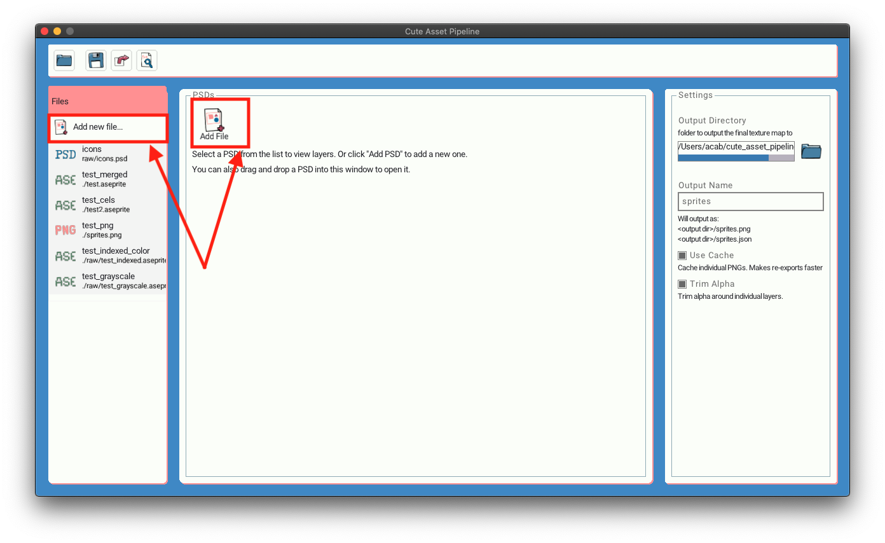

Adding Files to your project #
After creating a project you should add some files to it. Supported files types are:
- Photoshop files (.psd)
- Aseprite files (.ase or .aseprite)
- PNG (.png)
- JPEG (.jpeg)
To add a file either go to your your project main page and cick Add File. Or on the sidebar you will see a Add new file... button.

If you aren’t on your homepage click on the Files button on the left sidebar
Alternatively, on your project main page, you can drag and drop and supported file type into the Cute Exporter window.
Your project can contain any mix of file types. Cute Exporter will export them all into a single texture atlas.
Next up: Previewing Your Texture Atlas